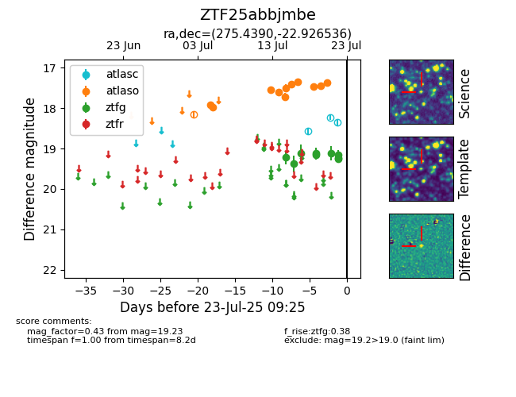

Target ZTF25abbjmbe at 2025-07-23 12:37, see:
FINK: fink-portal.org/ZTF25abbjmbe
Lasair: lasair-ztf.lsst.ac.uk/objects/ZTF25abbjmbe
ALeRCE: alerce.online/object/ZTF25abbjmbe
alt names
ZTF25abbjmbe (ztf,fink)
coordinates:
equatorial (ra, dec) = (275.4390,-22.92654)
galactic (l, b) = (9.2305,-4.11546)
photometry
last atlasc=18.35, atlaso=17.38, ztfg=19.23
3 atlasc, 12 atlaso, 9 ztfg detections
